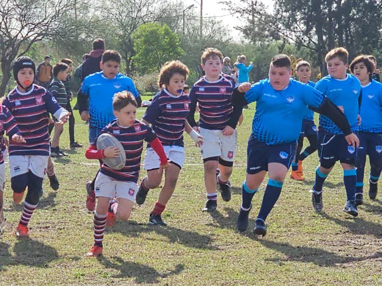

Fecha URBA 2023 de rugby infantil en Don Bosco
El club recibió a las divisiones infantiles de Varela Jr, Los Matreros, Centro Naval, Lanús RC, CAR y CUQ.

Después de las lluvias que habían puesto en riesgo su realización, la Fecha URBA de Rugby Infantil 2023 terminó siendo una jornada espléndida.
El 20 de mayo se reunieron los equipos que la Unión de Rugby de Buenos Aires (URBA) concentró en el Grupo C: Centro Naval, Los Matreros, Lanús Rugby Club, Club Argentino de Rugby, Varela Junior, Obras Sanitarias, Círculo Universitario de Quilmes y el Ateneo Don Bosco. La URBA nos confió a CUQ y a nosotros la organización del grupo, con sede compartida.
Las divisiones M14, M11, M10 y M9 jugaron en Don Bosco y el resto en CUQ. La jornada en Bernal reunió a más de 400 jugadores entre visitantes y locales. Fue el encuentro de rugby infantil más importante de 2023 en el distrito de Quilmes.
Cambios y lluvia
Originalmente el Grupo C incluía al Club Hindú, que por cuestiones de organización pasó a otro grupo y fue reemplazado por Los Matreros. Más cerca de la fecha, los responsables del rugby infantil de Obras Sanitarias avisaron que no podían participar: están reorganizándose, buscan un nuevo espacio para entrenar y reúnen chicos para cubrir la falta de jugadores en todas sus divisiones.
Las lluvias previas dejaron las canchas con mucha agua. En otros distritos, como Monte Grande, tuvieron que suspender la actividad por lo anegado del campo. Acá se jugó igual; los chicos se resbalaron más de lo habitual.
Pequeños seleccionados que fomentan la integración
Después de los partidos del fixture original, en el que todos los equipos jugaron por lo menos tres, en M9, M10 y M11 se armaron equipos combinados con jugadores de distintos clubes, dirigidos por los entrenadores de cada categoría como una especie de pequeño seleccionado.
La idea de integración la propuso Don Bosco y se llevó a cabo en Bernal, en sintonía con lo que impulsa la Comisión de Formación Integral y Mejora del Comportamiento (FIMCO) de la URBA.
La jornada cerró con el típico Tercer Tiempo: almorzaron primero todos los jugadores y después todos los entrenadores, con charla y anécdotas del día.
El encuentro fue un desafío organizativo para el club, que una vez más estuvo a la altura y está preparado para seguir creciendo en el segmento infantil.